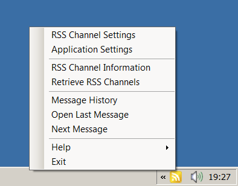
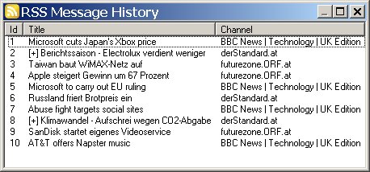
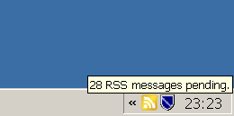

Screenshot: BalloonRSS, showing an RSS item as a balloon pop-up.
BalloonRSS - A Simple RSS Aggregator using Balloon Tooltips
Screenshot: BalloonRSS, showing an RSS item as a balloon pop-up.

Screenshot: Main menu of application.

Screenshot: Information on all subscribed RSS channels.

Screenshot: History of last shown RSS messages.

Screenshot: Status display if you place the mouse cursor over the application item.
| last update: Roman Morawek |